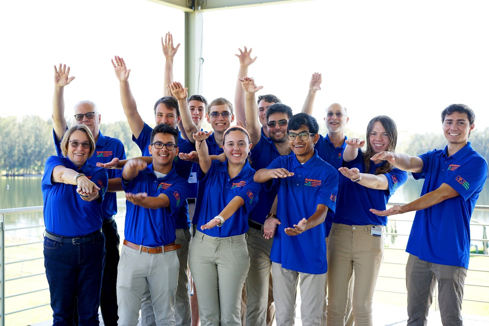

Lessons from RobotX 2022¶

Throughout the entire process leading up to and during RobotX 2022, Team NaviGator had fun, was able to accomplish a lot, and met a lot of great new friends. The learned a lot along the way and wanted to record these points for future teams to learn from!
Overall Improvements¶
Each and every system should be finished at least one month before the competition. - At RobotX 2022, our kill system was not completed before the team left for the competition in Australia. Unfortunately, this prevented the team from being able to run NaviGator in the water, as a kill system is required for the competition. At least one leader should ensure that every system is completed at least one month before the competition. This does not necessarily require the system to be perfect, only ready to go.
Mechanical, electrical, and software should meet throughout the design process. - While each team got together at the start of the semester to discuss the design plan for NaviGator, this meeting was not enough to sustain good progress throughout the semester. Each of the teams sometimes became confused about what the other teams needed, and overall, the teams lost sync with each other. By having regular meetings, teams can make sure that they are working towards the same goal.
We should have more design reviews from mentors. - Mentors are an important part of the design process. Mentors can catch design flaws in systems quicker than students can, and can show students how to improve their designs. These design reviews do not need to be super frequent, but could maybe occur when a new system is being designed.
Shipping Improvements¶
We should bring more materials over air rather than shipping them. - If cost allows, we should aim to bring more materials ourselves by plane rather than shipping. Shipping can be a hastle and is subject to more delays than bringing carry-ons or checking luggage. Furthermore, bringing less by shipping can shorten our shipping manifest, making the entire shipping process easier. One note about checking equipment is that it is likely to get tossed around a significant amount during travel. Therefore, we will need to pack materials cautiously, with the idea that the materials will be damaged during shipping.
Materials should be packed with failure in mind. - At RobotX 2022, we found out that one of our critical sensors, our LIDAR, broke. During shipping, it had only been packed in a layer of bubble wrap and placed into a Pelican case. This type of shipment is likely not safe for the LIDAR; instead, it should have been placed in a custom shipping case. By asking ourselves, “How could this item get destroyed in shipping?”, we could possibly prevent some breakage from occurring.
Packing/parts lists need to be made for each Pelican case taken. - No packing lists were made for any of the Pelicans shipped to the competition site. This presented a challenge, as we weren’t sure what was in each Pelican case, and whether we had brought all that we needed to bring. Before we left for the competition (after the Pelicans had shipped), we wondered, “Did we bring network box?”, but because no packing lists were available, we had no idea.
Mechanical Improvements¶
Use an organizer for tools. - Having cases/methods for keeping tools organized helps keep everyone’s sanity at bay, and makes finding tools quick. It is quicker to tell when tools have gone missing (as each tool now has a dedicated spot in the organizer), and which tool is missing. Furthermore, it becomes easier for software members, electrical members, and mentors to find tools, even if they maybe are not acquianted with a deep knowledge of the mechanical team.
Focus on bringing less and staying more organized. - At RobotX 2022, we were one of the teams who had brought the most equipment, yet we had a hard time finding much of it. Building off of the point above, we should aim to be more organized with what we bring, so that we are able to bring less. When tools are compactly organized into a container and each tool has a distinct purpose for the robot, there is less of a need to bring several sets of miscellaneous tools. Instead, we focus on bringing what we surely need to ace the competition.
We should have a fully updated CAD model. - Having a fully updated CAD model can help us identify the position of each distinct part of NaviGator. This is helpful for assembly, identifying what tools are needed for the competition, and packing.
Consider buying individual toolboxes for mechanical leaders. - Mechanical leaders often have to complete many quick tasks when assembling, disassembling, and fixing NaviGator. It would help the leaders complete their tasks quicker if they were able to have a set of tools ready on hand. With this toolset, they would not need to share tools as often or return to the pelicans/organizers to refill/return their tools. However, it was stressed that if this is implemented, the tools should be of high quality.
Electrical Improvements¶
Team members should be more readily taught the electrical systems behind NaviGator. - One issue for new electrical members is that they do not learn about the electrical system currently implemented on NaviGator. While electrical tutorials cover the basics of Altium and designing a circuit and PCB, the tutorials do not cover the electrical system in place on NaviGator. This can be a barrier to having new electrical members contribute to the electrical system on NaviGator.
The onboarding process should be improved. - Currently, the onboarding process is alright, but it could be improved. Currently, it’s lengthy, written in PDFs stored in a random GitHub repository, and it contains outdated information. Rather, this could be updated to be more interactive or helpful to the reader (by way of YouTube videos, websites, or more streamlined PDFs). Furthermore, many electrical members drop out of MIL during the electrical onboarding process, suggesting that they may be frustrated with how the process is currently done.
Software Improvements¶
The goal should be to branch off of
masteras soon as possible. - When preparing for RobotX 2022, we had several branches for testing new features. Some of the branches had branched off of other branches, which branched off of other branches, etc. By the end, many of the branches had diverged significantly frommasterand other members could not find which branch was actually being used. By encouraging a quick merge back intomaster, we can ship features more quickly, make development more transparent and accessible, and reduce the number of random branches.More redundancy and quality should be added into solutions. - While the software team was able to complete many of the high-level missions, these missions often took shortcuts or skimped on quality. No integration tests were added for many of the missions, and very few of them had their approach documented for other members to review. We should ask ourselves, “How might this implementation become broken?”, and then continually improve our code from there.
We need to understand how older packages function. - Many of core NaviGator’s libraries and systems could not be understand by any of the software members who attended RobotX 2022. This presents a challenge, because as soon as these implementations break, no one knows what could be wrong without a lengthy debugging session. Rather, we nede to be able to intensely understand the math, logic, and code behind what core packages implement.